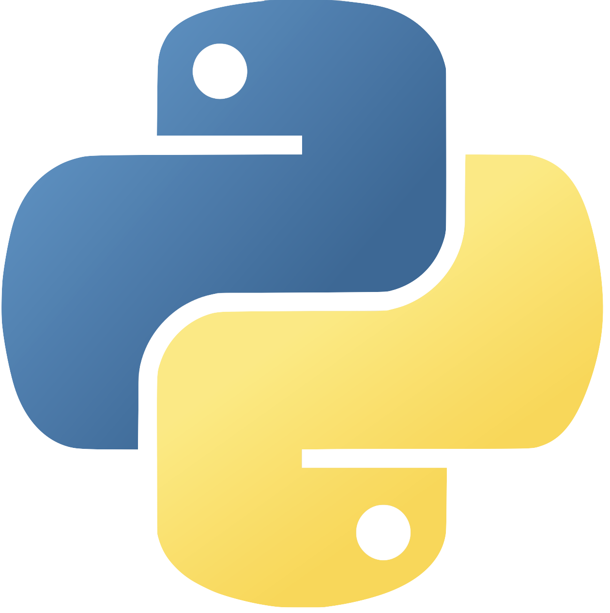
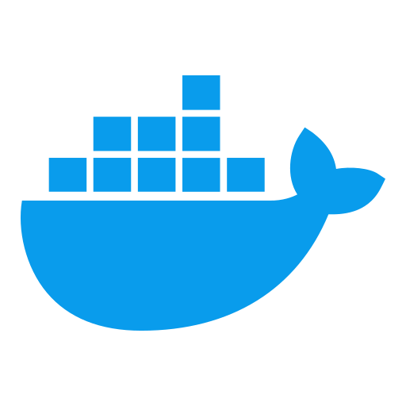
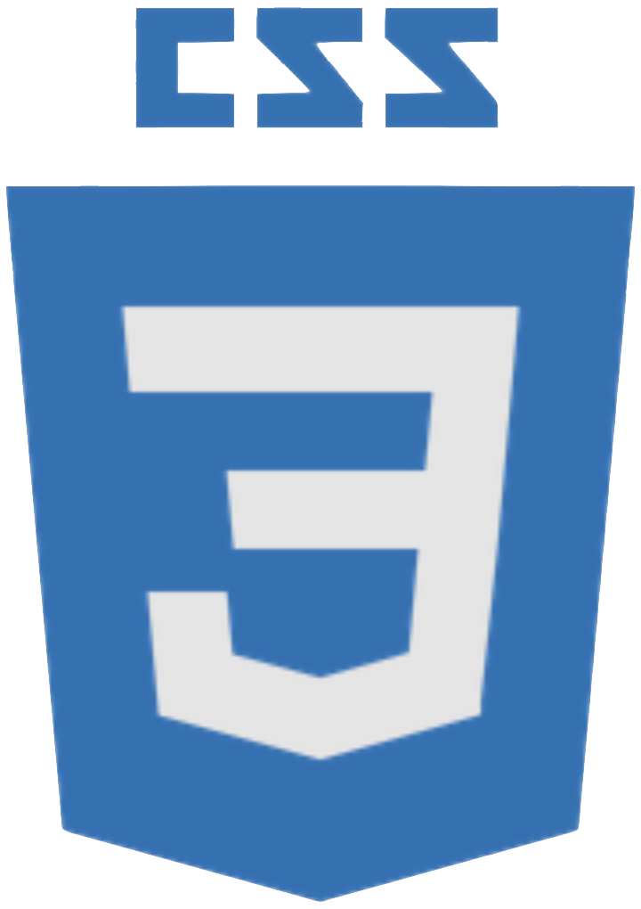

Check out my
Skills

Python
C
 C++
C++
Java
 Vue
Vue
 JavaScript
JavaScript
React
 Git
Git

Docker
HTML

CSS
School of Computing Science | Faculty of Applied Sciences
Bachelors of Science in Computing Science
SIMON FRASER UNIVERSITY
Major in Software Systems
Minor in Geography

Faculty of Engineering Secondary School | Department of Engineering
Technological Design (TDJ2O)
UNIVERSITY OF OTTAWA
Built various projects using microcomputers applying the Engineering Design Process.

12 year French Immersion Program
Diplôme de fin d'études secondaires
ÉCOLE PANORAMA RIDGE SECONDARY
Graduated 2022
Diplôme d'études en langue française (DELF) French Level B2.